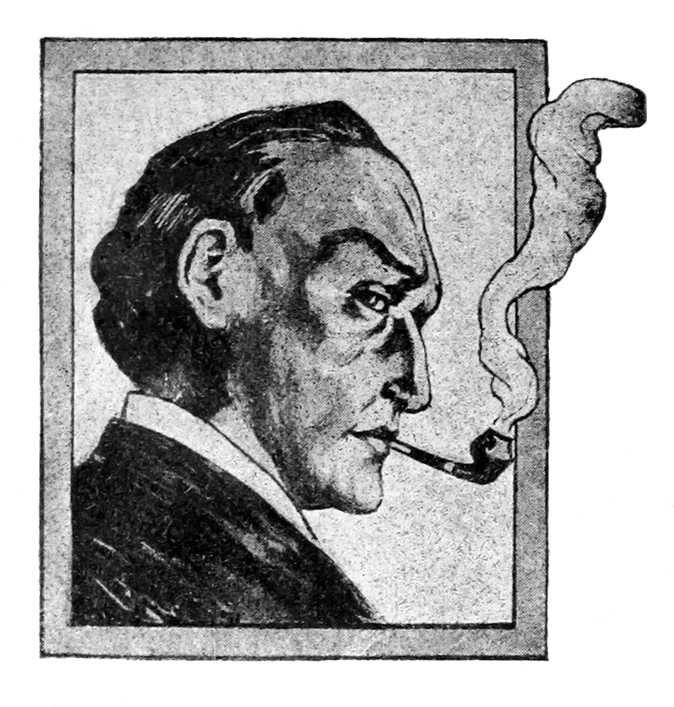
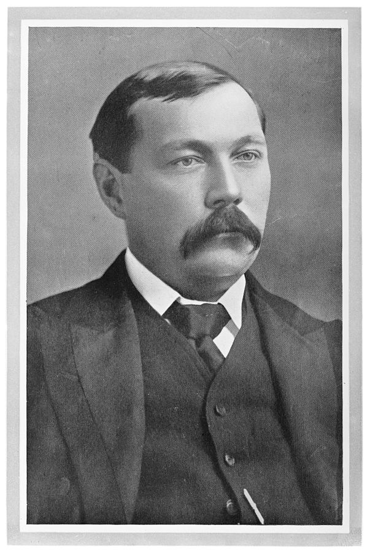
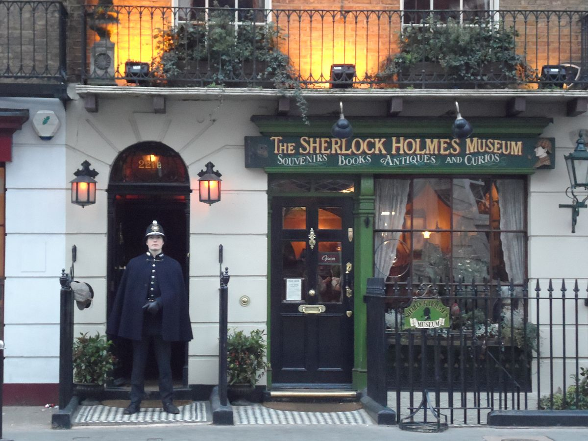

Sherlock Holmes is a fictional detective created by British author Sir Arthur Conan Doyle.
The character of Sherlock Holmes has become one of the most iconic figures in the world of detective fiction.
Over the years, Holmes has been portrayed in numerous adaptations in literature, stage, film, and television.
origin

Sherlock Holmes portrait with pipe (Wikimedia Commons)
Sherlock Holmes made his debut in the novel "A Study in Scarlet," which was published in 1887.
He quickly became a literary sensation, captivating readers with his brilliant deductive reasoning,
keen observation skills, and aloof, enigmatic personality.
Holmes was not only a detective but also a forensic scientist, using his vast knowledge of chemistry,
anatomy, and other sciences to solve complex cases.
characteristics
Basil Rathbone as Sherlock Holmes from (Dennis Amith: Flickr)
Sherlock Holmes is known for his distinctive characteristics and eccentricities.
He is a tall, slender man with a sharp, hawk-like nose and piercing gray eyes.
Holmes is often depicted wearing a deerstalker hat and a cape while carrying a magnifying glass and a pipe.
He is a master of disguise and can adopt various personas to blend into different situations.
Holmes is a brilliant and highly analytical thinker.
His deductive reasoning is unparalleled, allowing him to solve cases that baffle Scotland Yard
and other law enforcement agencies. Holmes is a rationalist, relying on logic and evidence to solve crimes.
He is known for his catchphrase, "Elementary, my dear Watson," although this specific phrase is not present in Doyle's original works.
Holmes's closest companion and chronicler is Dr. John Watson. Watson is often described as a reliable and loyal
friend who assists Holmes in his investigations. Watson also serves as a conduit for the reader, providing insight
into Holmes's methods and personality.
about the author

Sir Arthur Conan Doyle (Wikimedia Commons)
The genius behind Sherlock Holmes is Sir Arthur Conan Doyle, a Scottish author and physician.
Doyle was born on May 22, 1859, in Edinburgh, Scotland. He received his medical degree from the University
of Edinburgh and later worked as a ship's surgeon. Doyle's background in medicine and science is evident in
Holmes's use of forensic techniques and logical analysis.
Doyle's creation of Sherlock Holmes was influenced by his mentor, Dr. Joseph Bell, whose keen powers of
observation and deduction left a lasting impression on the young author. The character of Holmes was inspired
by Bell's remarkable ability to diagnose patients and deduce details about their lives from simple observations.
Arthur Conan Doyle wrote a total of four novels and fifty-six short stories featuring Sherlock Holmes.
These stories are collectively known as "The Canon." Doyle's works have had a profound and lasting impact on the
detective fiction genre, and Holmes remains a beloved and influential figure in popular culture.
location

221B Baker Street (Wikimedia Commons)
Sherlock Holmes operates in a meticulously detailed and immersive world. His adventures are primarily set in
Victorian and Edwardian London, a city teeming with foggy streets, gaslit alleys, and a vast array of characters.
Holmes's Baker Street residence at 221B Baker Street is a famous location where many of the stories unfold.
This address has become a symbol of Holmes's legacy.
Holmes's London is a city where the upper classes and the underworld intersect.
His cases take him into various parts of society, from the grand houses of the aristocracy to the dark corners
of the criminal underworld.
notable cases
1. "A Study in Scarlet": The novel that introduced Holmes and Watson as they investigate a series of murders with a trail that leads from London to the American West.
2. "The Hound of the Baskervilles": A full-length novel that centers around the legend of a supernatural hound haunting the Baskerville family. Holmes and Watson are tasked with solving the mystery.
3. "The Adventures of Sherlock Holmes": This collection of short stories features various cases, including "A Scandal in Bohemia," where Holmes encounters Irene Adler, one of his most formidable adversaries.
4. "The Sign of Four": A novel in which Holmes investigates a complex treasure hunt related to a mysterious Indian prison guard and stolen treasure.
5. "The Adventures of the Blue Carbuncle": A Christmas-themed story where Holmes solves a case involving a stolen gemstone found in a Christmas goose.
6. "The Final Problem": In this story, Holmes faces his nemesis, Professor Moriarty, in a deadly showdown at the Reichenbach Falls, leading to a climactic struggle.
7. "The Empty House": The story of Holmes's return after his apparent death at the Reichenbach Falls and his continued adventures with Watson.
8. "The Norwood Builder": A case involving a murder and arson, with an unexpected twist.
9. "The Bruce-Partington Plans": Holmes investigates the mysterious death of a government employee and the disappearance of important military plans.
These are just a few of the many cases and stories that make up the extensive Sherlock Holmes canon.
Sherlock Holmes has left a prominent mark on literature and popular culture. He has been portrayed by numerous
actors in films and television series, with some of the most notable adaptations including those by Basil Rathbone,
Jeremy Brett, and Robert Downey Jr. The character has appeared in countless different works, spin-offs, and
parodies.
The approach of Holmes have also influenced real-world investigative techniques,
with detectives and investigators drawing inspiration from his methods. The character's popularity speaks to
the timeless appeal of brilliant, enigmatic detectives who use their intellect to solve complex mysteries.
Sherlock Holmes, is a legendary detective known for his exceptional
deductive reasoning, keen observation skills, and logical approach to solving complex mysteries. His legacy
in literature and popular culture is a testament to the appeal of a brilliant, complex character who has
captivated the imaginations of readers and viewers for over a century.